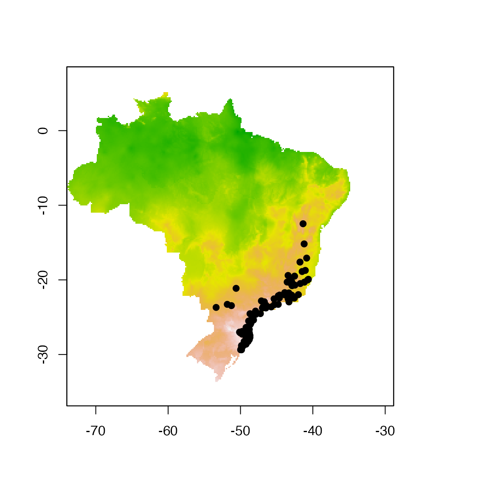
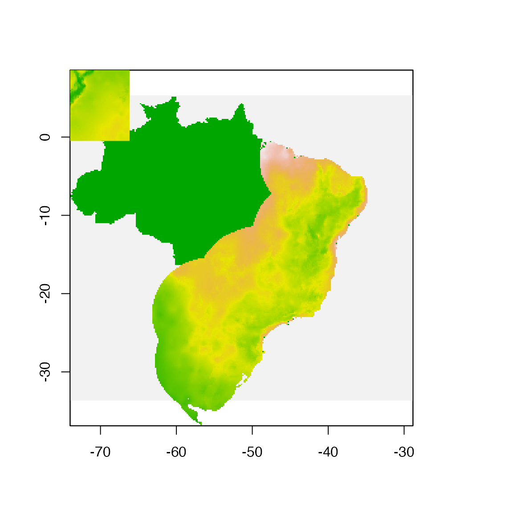
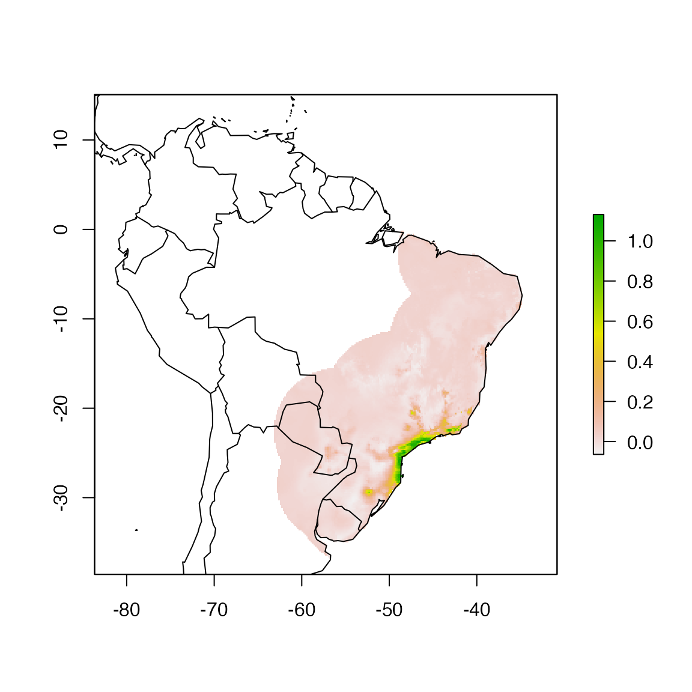
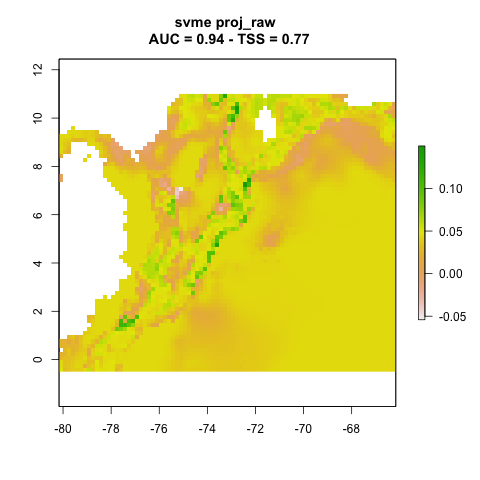
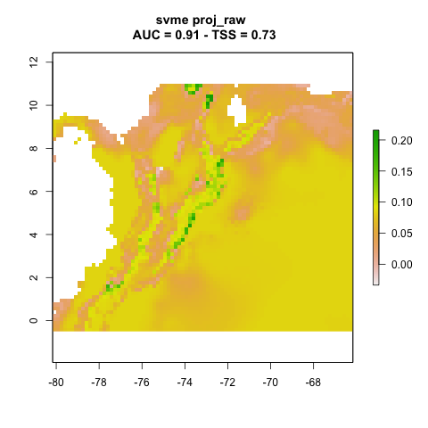
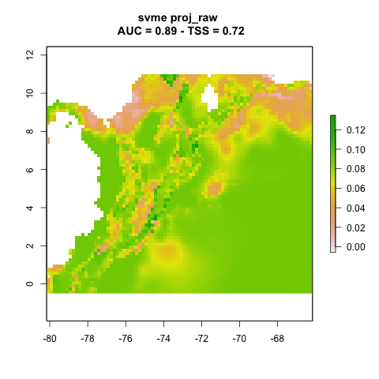
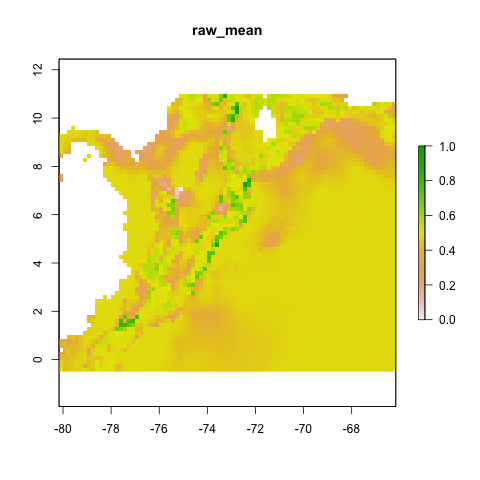
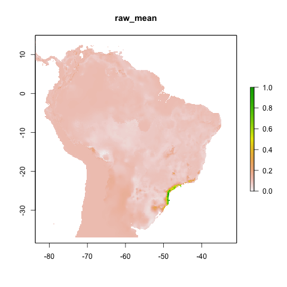
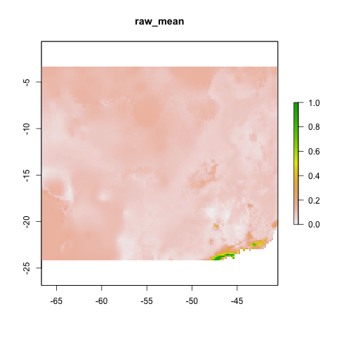

Projecting models in modleR
Andrea Sánchez-Tapia
2023-08-03
Source:vignettes/articles/projection.Rmd
projection.RmdHere we explain the setup for projecting models in modleR.
Loading required packages.
## Warning: multiple methods tables found for 'elide'Selecting one species as an example
We use the standard dataset inside the package modleR.
First, from example_occs object we select only data from
one species Abarema langsdorffii and create one training set
(70% of the data) and one test set (30% of the data) for the data.
## Creating an object with species names
especies <- names(example_occs)[1]
# Selecting only coordinates for the first species
coord1sp <- example_occs[[1]]
head(coord1sp)## sp lon lat
## 343 Abarema_langsdorffii -40.615 -19.921
## 344 Abarema_langsdorffii -40.729 -20.016
## 345 Abarema_langsdorffii -41.174 -20.303
## 346 Abarema_langsdorffii -41.740 -20.493
## 347 Abarema_langsdorffii -42.482 -20.701
## 348 Abarema_langsdorffii -40.855 -17.082
dim(coord1sp)## [1] 104 3## [1] 73
# Making a sample of 70% of species' records
set <- sample(1:nrow(coord1sp), size = ceiling(0.7 * nrow(coord1sp)))
# Creating training data set (70% of species' records)
train_set <- coord1sp[set,]
# Creating test data set (other 30%)
test_set <- coord1sp[setdiff(1:nrow(coord1sp), set), ]Now lets the check our data points. We plot the traning and test data
sets with the first axis of the environmental PCA data from the object
example_vars.
# selecting only the first PCA axis
predictor <- example_vars[[1]]
# transforming the data frame with the coordinates in a spatial object
pts <- SpatialPoints(coord1sp[,c(2,3)])
# ploting environmental layer
plot(predictor, legend = FALSE)
points(lat ~ lon, data = coord1sp, pch = 19)
Fitting and projection datasets
We want to fit everything in a small area around the occurrence points and project it to other sample rasterStack objects.
The structure of folder for projections in modleR is key for this
step. In this example we have a folder with environmental data
"./env". The period means “the current working directory”
so this is a subfolder, in this case it is besides the folder where the
model outputs are created ("./models_dir") by default.
current_wd
├── models_dir etc...
└── env
├── cropped_proj.tif
└── proj/
├── proj1/
│ ├ var01.tif
│ ├ var02.tif
│ ├ var03.tif
│ └ var04.tif
├── proj2/
│ ├ var01.tif
│ ├ var02.tif
│ ├ var03.tif
│ └ var04.tif
├── proj3/
│ ├ var01.tif
│ ├ var02.tif
│ ├ var03.tif
│ └ var04.tif
└── proj4/
├ var01.tif
├ var02.tif
├ var03.tif
└ var04.tifNote that in this subfolder every projection has its own subfolder,
and that all variables have the same names. You can put all the
variables (from bio01 to bio19 in Worldclim, for example) and if there’s
a variable selection within do_any() the function will use
only the selected variables too.
For performing projections in modleR you only need to pass the
address of the folder where the projection variables are
proj_data_folder = "./env/proj" and set
project_model = TRUE.
We show here the example dataset and one of the projections
(proj1)
fit_data <- stack("./data/env/cropped_proj.tif")
proj_folder <- "./data/env/proj/proj1/"
proj_data <- list.files(proj_folder, full.names = TRUE) %>%
stack() %>%
.[[1]]
pts <- SpatialPoints(coord1sp[,c(2,3)])
plot(!is.na(example_vars[[1]]), legend = FALSE, add = FALSE)
plot(fit_data[[1]], legend = FALSE, add = TRUE)
plot(proj_data[[1]], legend = FALSE, add = TRUE)
Models will be fit in the area of the Brazilian Atlantic Forest and projected to the Northern Andes in Colombia.
Model projection
A simple model with no buffer and no projection:
# generating sdmdata
sdm_no_proj <- setup_sdmdata(species_name = especies[1],
occurrences = coord1sp[,-1],
predictors=fit_data,
models_dir="./projections/",
clean_dupl = TRUE,
clean_na = TRUE)
# running models
no_proj <- do_any(species_name = especies[1],
predictors = fit_data,
models_dir = "./projections/",
algorithm = "svme")## Warning: `mutate_()` was deprecated in dplyr 0.7.0.
## ℹ Please use `mutate()` instead.
## ℹ See vignette('programming') for more help
## ℹ The deprecated feature was likely used in the kuenm package.
## Please report the issue to the authors.
## This warning is displayed once every 8 hours.
## Call `lifecycle::last_lifecycle_warnings()` to see where this warning was
## generated.
no_proj.bc <- raster("./projections/Abarema_langsdorffii/present/partitions/svme_cont_Abarema_langsdorffii_1_1.tif")
plot(no_proj.bc)
maps::map(, , add = TRUE)
Projections
We make a series of projections in the specified folder:
"./env/proj". We use function do_any() and
algorithm svme in this example:
names(fit_data) <- paste0("proj1_", 1:6)
# this is just to make sure that all current layers have the same names of the projectio variables.
sdm_yes_proj <- setup_sdmdata(species_name = especies[1],
occurrences = coord1sp[, -1],
predictors = fit_data,
models_dir = "./projections/",
clean_dupl = TRUE,
clean_na = TRUE,
buffer_type = "median",
partition_type = "bootstrap",
boot_n = 3)
yes_proj1 <- modleR::do_any(species_name = especies[1],
predictors = fit_data,
models_dir = "./projections/",
algo = "svme",
project_model = TRUE,
proj_data_folder = "data/env/proj/",
png_partitions = TRUE)The same parameters would work when calling do_many()
(not run here)
We can plot the resulting projections. Note that this is one projection per partition (n = 3).
knitr::include_graphics("./projections/Abarema_langsdorffii/proj1/partitions/svme_cont_Abarema_langsdorffii_1_1.png")
knitr::include_graphics("./projections/Abarema_langsdorffii/proj1/partitions/svme_cont_Abarema_langsdorffii_2_1.png")
knitr::include_graphics("./projections/Abarema_langsdorffii/proj1/partitions/svme_cont_Abarema_langsdorffii_3_1.png")
Final model projection
final_model() has a parameter proj_dir that
allows it to be run using any projection. Unlike do_any()
and do_many() this function needs to be run for each
projection. The default projection is "present".
final_model_present <- final_model(species_name = especies[1],
models_dir = "./projections/",
proj_dir = "present",
overwrite = TRUE)## [1] "Thu Aug 3 11:12:33 2023"## [1] "DONE svme !"For the projected models, each proj_dir has to have the
name of the projection
Proj1
final_model_proj1 <- final_model(species_name = especies[1],
models_dir = "./projections/",
proj_dir = "proj1",
overwrite = TRUE)## [1] "Thu Aug 3 11:12:37 2023"## [1] "DONE svme !"
knitr::include_graphics("./projections/Abarema_langsdorffii/proj1/final_models/Abarema_langsdorffii_svme_raw_mean.png")
Proj2
final_model_proj2 <- final_model(species_name = especies[1],
models_dir = "./projections/",
proj_dir = "proj2",
overwrite = TRUE)## [1] "Thu Aug 3 11:12:38 2023"## [1] "DONE svme !"
knitr::include_graphics("./projections/Abarema_langsdorffii/proj2/final_models/Abarema_langsdorffii_svme_raw_mean.png")
Proj3
final_model_proj3 <- final_model(species_name = especies[1],
models_dir = "./projections/",
proj_dir = "proj3",
overwrite = TRUE)## [1] "Thu Aug 3 11:12:43 2023"## [1] "DONE svme !"
knitr::include_graphics("./projections/Abarema_langsdorffii/proj3/final_models/Abarema_langsdorffii_svme_raw_mean.png")
Proj4
final_model_proj4 <- final_model(species_name = especies[1],
models_dir = "./projections/",
proj_dir = "proj4",
overwrite = TRUE)## [1] "Thu Aug 3 11:12:47 2023"## [1] "DONE svme !"
knitr::include_graphics("./projections/Abarema_langsdorffii/proj4/final_models/Abarema_langsdorffii_svme_raw_mean.png")